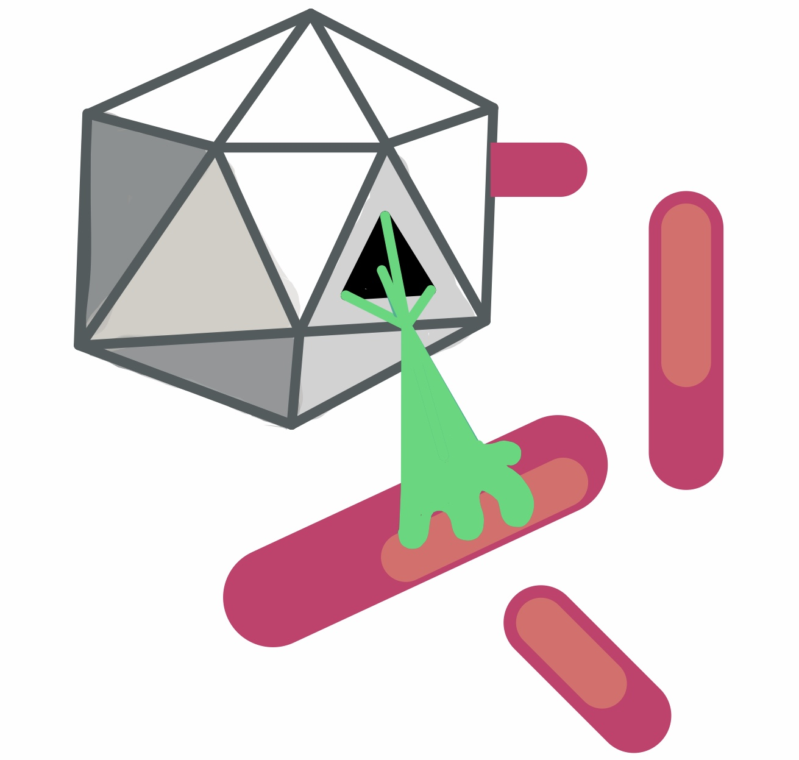

PhageOne: Mycobacteriophage Engineering Tools
These tools assist biologists design edits to phage genomes and then generate nessecary materials needed to make those edits using BRED.
Tools
Editing Guides
BRED Assistant
Genome Synteny
Publication
Downloads
Application code accessible and commented research notebooks available at
https://github.com/sky123martin/PhageOne
Authors and Contributors
Skylar Martin
Dr. Aaron Clauset
In collaboration with the
Living Matter Lab:
Dreycey Albin
Dr. Mirela Alistar
For technical issues, bug reports, and code contributions, please use the github or email Skylar.Martin@colorado.edu